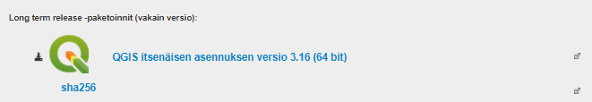

2 Harjoitus 1: Koulutusympäristön valmistaminen
2.1 Harjoituksen sisältö
Harjoituksessa ladataan QGIS ja tallennetaan kurssimateriaalit käytettävälle tietokoneelle.
##Harjoituksen tavoite
Harjoituksen jälkeen koulutettava osaa asentaa QGISin ja tietää oman kurssihakemistonsa sijainnin.
2.2 Arvioitu kesto
10 minuuttia.
2.3 Valmistautuminen
Avaa web-selain ja mene QGISin suomenkielisille verkkosivuille: http://www.qgis.org/fi/site/
2.4 QGISin lataus ja asennus
Löydät QGISin verkkosivujen etusivulta linkin, jonka avulla pääset lataamaan QGIS-työpöytäohjelmiston. Lataa sivustolta viimeisin QGIS LTR (long term release eli pitkäaikaisversio). Pitkäaikaisversio sopii parhaiten ammattikäyttöön, sillä se on vakain QGIS-versio – siitä voi kuitenkin puuttua joitakin uudempien versioiden ominaisuuksia. QGISin voi asentaa Windows-, Linux- tai Mac-käyttöjärjestelmään. Eri järjestelmien QGIS-versioiden välillä huomattavimmat erot ovat väriskeemoissa ja tiedostopoluissa – muuten erot ovat hyvin pieniä. 
Avaa tietokoneeltasi sijainti, jonne asennuspaketti latautui ja tuplaklikkaa asennuspaketin kuvaketta asentaaksesi QGIS-paketin tietokoneellesi. Kun asennus on suoritettu, kurkista työpöydälle ilmestyneeseen QGIS 3.16 -kansioon ja tarkastele sieltä löytyviä pikakuvakkeita. [](img(harjoitus_1(image2.png)
QGISin perusasennuspaketin mukana tietokoneellesi asennetaan QGIS Desktop -perusohjelmiston lisäksi mm. QGIS Desktop with GRASS sekä SAGA GIS. Nämä QGISin perusversion mukana tulevat ohjelmistot tuovat QGISin käyttöön lisää erilaisia prosessointi- ja analysointityökaluja.
2.5 Kurssimateriaalien lataus
Kouluttaja ohjeistaa sinua lataamaan kurssimateriaalit joko muistitikulta, Google Drivestä tai AWS-palvelimelta. Kopioi kurssimateriaalit omalle tietokoneellesi tai koulutuskoneelle haluamaasi kansioon niin, että löydät ne helposti harjoituksia tehdessä. Kun kurssimateriaalissa viitataan ../kurssihakemisto/, tarkoitetaan itse määrittelemääsi kurssihakemiston polkua.